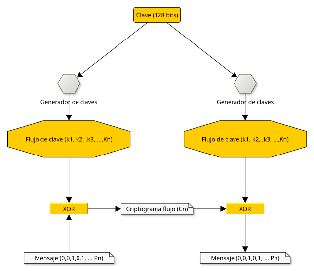

Cifrado simétrico
Mikel Egaña Aranguren
Criptosistemas
Clave privada (simétricos), clave pública (asimétricos)
Monoalfabéticos, polialfabéticos
Sustitución, transposición
Stream ciphers, block ciphers
Criptosistemas de clave privada

Cifrado césar
Algoritmo de cifrado muy antiguo
Sustitución monoalfabética
Desplazar cada letra del mensaje un número fijo de posiciones en el alfabeto: N=3, A->C
Ataques a criptosistemas
Encontrar la clave de cifrado sin conocerla: descifrar texto cifrados
Encontrar debilidades en el algoritmo de cifrado para descifrar el texto cifrado sin la clave
Ataques por fuerza bruta
Probar todas las claves posibles hasta encontrar un texto descifrado con sentido
Hay que conocer el algoritmo de cifrado y el espacio de claves (¿Espacio de claves César? -Laboratorio-)
Coste computacional elevado (¿Computación cuántica?)
Reducir el espacio de claves haciendo algunas claves más probables
Cifrado simple por sustitución
Se sustituye cada letra del mensaje original por otra letra de un alfabeto reordenado

Monoalfabético
Cifrado simple por sustitución
¿Espacio de claves?
Reducir el espacio de claves haciendo algunas claves más probables: ataque estadístico mediante análisis de frecuencias
Análisis de frecuencias
Monoalfabético: un carácter "original" siempre se sustituye por el mismo carácter/es
Se sabe cuáles son los caracteres más frecuentes en cada idioma
Se sabe las palabras de dos/tres/cuatro caracteres (bigramas, trigramas y tetragramas) más frecuentes en cada idioma
Análisis de frecuencias
Se va "probando" y deduciendo
Cuanto más largo es el texto cifrado, mejor
Hay que saber el idioma del texto original
Análisis de frecuencias
Porcentaje de aparición de caracteres en castellano

Análisis de frecuencias
¿Cómo dificultar el ataque por análisis de frecuencias?
Evitar la correspondencia 1-1 usando el mismo carácter en más de una ocasión (Sistemas polialfabéticos)
Cifrado playfair
Polialfabético

Espacio de claves: 25!
Analisis de frecuencias sobre bigramas
La máquina Enigma
Dispositivo de cifrado electromecánico utilizado principalmente durante la Segunda Guerra Mundial por los alemanes
Clave: configuración de los rotores
_-_Museo_scienza_e_tecnologia_Milano.jpg)
La máquina Enigma
Alan Turing principal criptoanalista: máquina electromecánica diseñada para buscar automáticamente las configuraciones posibles de Enigma (Bomba). Fundamental para ganar la guerra
Turing fundamental para informática: maquinas de Turing, algoritmos de computación, inteligencia artificial, ... ???
Turing se suicido en 1954, después de ser perseguido por su homosexualidad. Icono Apple, gobierno UK
Criptosistemas simétricos modernos
Cifran bits en vez de texto
Cifrado en flujo (Stream ciphers): cifrar un flujo continuo de bits
Cifrado en bloque (Block ciphers): dividir el mensaje en bloques del mismo tamaño y aplicar el algoritmo a cada uno
Stream ciphers
Cifran un flujo bit a bit
Usado para comunicaciones en tiempo real (No se puede esperar a tener el mensaje completo para
cifrarlo y transmitirlo)
Stream ciphers
A partir de la clave, se usa un generador pseudoaleatorio que genera el flujo de clave (de manera determinista, pero parece aleatoria) de igual tamaño que el mensaje
La operación XOR entre el bit a cifrar y el flujo de clave genera el criptograma
Stream ciphers

Stream ciphers: XOR
Reversible
No pierde información
Muy eficiente
Clave aleatoria, salida parece aleatoria
One time pad irrompible: C = P XOR K (K totalmente aleatoria, tan largo como mensaje, usada una sola vez)
Stream ciphers
No reutilizar la misma clave para cifrar múltiples mensajes
Keystream = F(clave, nonce)
- Clave: secreta y fija
- Nonce: público y diferente para cada mensaje
Stream ciphers: RC4
1995-2015 (TLS/SSL, WEP)
- https://www.rc4nomore.com/
- Ataque de recuperación de la clave: Fluhrer, S., Mantin, I., & Shamir, A. (2001). Weaknesses in the Key Scheduling Algorithm of RC4
- Ataque de sesgo estadístico: Paul, G., & Preneel, B. (2004). A New Weakness in the RC4 Keystream Generator and an Approach to Improve the Security of the Cipher
Block ciphers
Partir el mensaje original en bloques de tamaño fijo
Cada bloque de mensaje original genera un bloque de
mensaje cifrado
Se pueden añadir iteraciones, permutaciones y
operaciones entre los distintos bloques
Propagación de errores (!Stream ciphers)
Padding
DES (Data Encryption Standard)
- 1975, Primer estándar
- Bloques de 64 bits
- Clave de 56 bits (64 - 8 como propuesta de la NSA para asegurarse de que podian romperlo -???-)
- Se considera inseguro actualmente: ej. ataque fuerza bruta: Wiener, M. J. (1999). "Efficient DES Key Search". Practical Cryptography for Data Internetworks. Indiana University: Research Institute for Advanced Computer Science. ISBN 0-8186-8828-1.
Triple DES
- Concebido como sucesor de DES, todavia en uso pero no recomendado desde 2023 (CVE-2016-2183)
- Basado en realizar 3 ejecuciones de DES (Cifrar -
Descifrar - Cifrar)
- Bloques de 64 bits
- Claves de 168 bits (3*56), clave efectiva 112 bits
AES (Advanced Encryption Standard)
- Rijndael
- Estandarizado por el Instituto Nacional de Normas y Tecnología (NIST), EEUU
- Sustituto de (Triple) DES
- Muy usado en todo tipo de comunicaciones y transacciones
- Bloques de 128 bits
- Claves de 128, 192 o 256 bits
IDEA (International Data Encryption Algorithm)
- Bloques de 64 bits
- Clave 128 bits
- 8 rondas y media
- Está considerado seguro (excepto algunas claves
débiles)
- Incluído en OpenPGP


.png)
{kind=link}